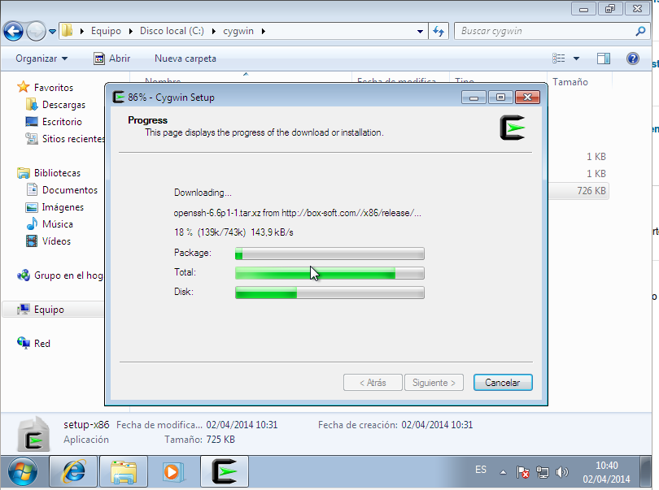
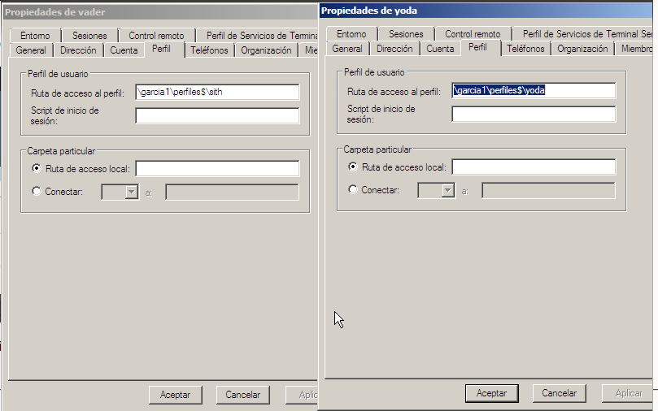
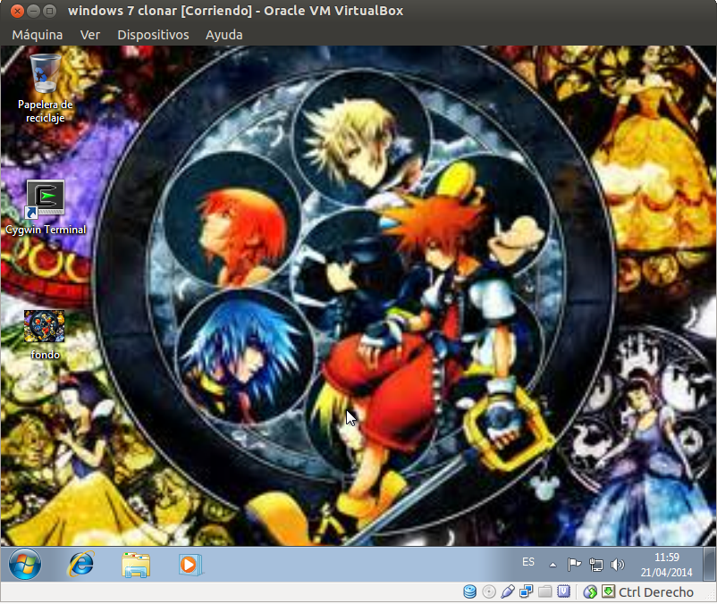
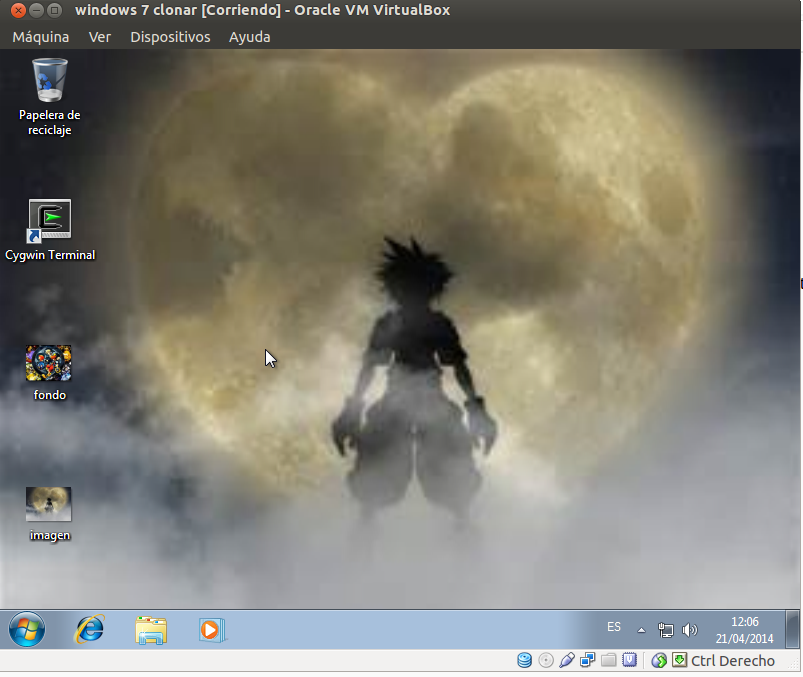

- Módulo: Sistemas Operativos
- Título del trabajo A1: PDC WinServer
- Componentes del grupo: Alejandro García Yumar
- Curso Académico: 2013/2014
- Fecha de entrega: 23 de Abril de 2014
Este será la funcion que se utiliza en windows server para poder usar los perfiles móviles.
Primero debemos instalar en los clientes el programa Cygwin.

Empezamos a instalar el active directory


En Este paso debemos elegir la opcion marcada.


Una vez unidos todos los equipos a el dominio deberia aparecer algo similar a esta foto.

Creamos los distintos usuarios con los que se va a trabajar en los perfiles.

A estos usuarios deberemos decirles de donde deben coger la informacion de los perfiles, con lo que creamos una carpeta compartida
llamada perfiles$ (recordar darle suficientes permisos como para poder modificar).

Ahora le decimos que ruta deben tomar para acceder.

Accedemos con uno de los usuarios, en este caso obiwan.

Ahora modificamos algo en la maquina.

En otro ordenador he descargado otro imagen y la he puesto de fondo.

En el primer ordenador se observa que se mantienen los archivos y vuelvo a cambiar el fondo por el primero.

Han surgido algunos problemas como fue el caso de que no se actualizaban los datos de una maquina ha otro debido a los permisos,
y tambien el impedimento de no poder hacer los perfiles obligatorios obligandonos a dejar el trabajo hasta los perfiles moviles.